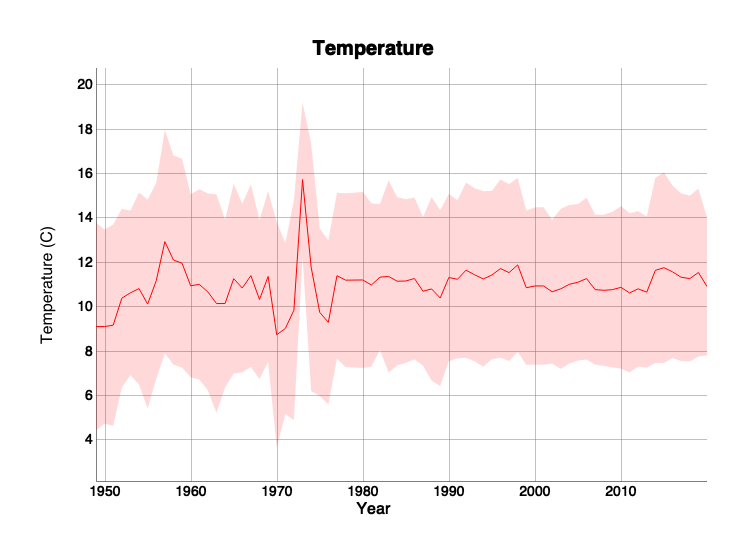

R package of helper functions for reading and visualizing data from the CalCOFI API](https://api.calcofi.io).
Install R package
# install.packages("devtools")
remotes::install_github("calcofi/calcofi4r")Plot time series of an oceanographic variable
library(calcofi4r)
# get variables
(v <- get_variables())
#> Rows: 7 Columns: 5
#> ── Column specification ────────────────────────────────────────────────────────
#> Delimiter: ","
#> chr (5): category, table_field, plot_title, plot_label, plot_color
#>
#> ℹ Use `spec()` to retrieve the full column specification for this data.
#> ℹ Specify the column types or set `show_col_types = FALSE` to quiet this message.
#> # A tibble: 7 × 5
#> category table_field plot_title plot_label plot_color
#> <chr> <chr> <chr> <chr> <chr>
#> 1 Oceanographic ctdcast_bottle.t_deg_c Sea Surfa… Temperatu… red
#> 2 Oceanographic ctdcast_bottle.salnty Salinity Salinity … gray
#> 3 Oceanographic ctdcast_bottle_dic.bottle_o2_m… Oxygen Co… Oxygen (m… blue
#> 4 Oceanographic ctdcast_bottle_dic.bottle_o2_m… Oxygen Co… Oxygen (µ… blue
#> 5 Oceanographic ctdcast_bottle_dic.dic1 Dissolved… DIC (µmol… brown
#> 6 Oceanographic ctdcast_bottle_dic.dic2 Dissolved… DIC (µmol… brown
#> 7 Oceanographic ctdcast_bottle.o2sat Oxygen Sa… Oxygen pe… blue
# fetch time series data for the first variable from CalCOFI API
(d <- get_timeseries(v$table_field[1]))
#> # A tibble: 71 × 4
#> year t_deg_c_avg t_deg_c_sd n_obs
#> <dbl> <dbl> <dbl> <dbl>
#> 1 1949 9.12 4.68 28081
#> 2 1950 9.12 4.37 38298
#> 3 1951 9.19 4.54 40459
#> 4 1952 10.4 4.03 31690
#> 5 1953 10.6 3.71 29789
#> 6 1954 10.8 4.33 18874
#> 7 1955 10.1 4.71 23248
#> 8 1956 11.2 4.41 14274
#> 9 1957 13.0 5.04 19072
#> 10 1958 12.1 4.71 24324
#> # … with 61 more rows
# plot time series with the first variable
with(v[1,],
plot_timeseries(
# data and columns (from d)
d, year, t_deg_c_avg, t_deg_c_sd,
# plot attributes (from v)
plot_title, plot_label, plot_color))
Map interpolated oceanographic variable for a cruise
# get cruises
(z <- get_cruises())
#> Rows: 658 Columns: 8
#> ── Column specification ────────────────────────────────────────────────────────
#> Delimiter: ","
#> chr (1): cruise_id
#> dbl (5): lon_min, lon_max, lat_min, lat_max, n_casts
#> date (2): date_beg, date_end
#>
#> ℹ Use `spec()` to retrieve the full column specification for this data.
#> ℹ Specify the column types or set `show_col_types = FALSE` to quiet this message.
#> # A tibble: 658 × 8
#> cruise_id date_beg date_end lon_min lon_max lat_min lat_max n_casts
#> <chr> <date> <date> <dbl> <dbl> <dbl> <dbl> <dbl>
#> 1 2020-01-05-C-3… 2020-01-05 2020-01-26 -126. -117. 29.9 37.8 104
#> 2 2019-11-04-C-3… 2019-11-04 2019-11-18 -124. -117. 29.8 35.1 75
#> 3 2019-07-11-C-3… 2019-07-11 2019-07-26 -124. -117. 30.2 35.1 70
#> 4 2019-04-02-C-3… 2019-04-02 2019-04-17 -124. -117. 29.9 35.1 67
#> 5 2019-02-07-C-3… 2019-02-07 2019-02-12 -124. -118. 31.1 34.5 29
#> 6 2018-10-14-C-3… 2018-10-14 2018-10-29 -124. -117. 29.8 35.1 74
#> 7 2018-06-09-C-3… 2018-06-09 2018-06-24 -124. -117. 29.8 35.1 72
#> 8 2018-04-05-C-3… 2018-04-05 2018-04-26 -126. -117. 29.8 37.8 103
#> 9 2018-02-01-C-3… 2018-02-01 2018-02-10 -124. -118. 31.1 35.1 45
#> 10 2017-11-09-C-3… 2017-11-09 2017-11-24 -124. -117. 29.8 35.1 74
#> # … with 648 more rows
# get path of temporary file to store raster
(r_tif <- tempfile(fileext=".tif"))
#> [1] "/var/folders/yw/yhdcs2vn44qbyqhktjhbl4br0000gn/T//Rtmp68iO0d/filec3ca285f66a2.tif"
# use second variable from previously fetched v
c(v$table_field[2], v$plot_label[2])
#> [1] "ctdcast_bottle.salnty" "Salinity (practical salinity scale)"
# fetch interpolated raster from CalCOFI API
get_raster(
variable = v$table_field[2],
cruise_id = "2020-01-05-C-33RL",
depth_m_min = 0, depth_m_max = 200,
out_tif = r_tif)
#> [1] "/var/folders/yw/yhdcs2vn44qbyqhktjhbl4br0000gn/T//Rtmp68iO0d/filec3ca285f66a2.tif"
# read raster
r <- raster::raster(r_tif)
# plot raster
map_raster(r, v$plot_label[2])
#> Warning in showSRID(uprojargs, format = "PROJ", multiline = "NO", prefer_proj =
#> prefer_proj): Discarded ellps WGS 84 in Proj4 definition: +proj=merc +a=6378137
#> +b=6378137 +lat_ts=0 +lon_0=0 +x_0=0 +y_0=0 +k=1 +units=m +nadgrids=@null
#> +wktext +no_defs +type=crs
#> Warning in showSRID(uprojargs, format = "PROJ", multiline = "NO", prefer_proj =
#> prefer_proj): Discarded datum World Geodetic System 1984 in Proj4 definition
# cleanup by deleting temporary file
unlink(r_tif)Code of Conduct
Please note that the calcofi4r project is released with
a Contributor
Code of Conduct. By contributing to this project, you agree to abide
by its terms.